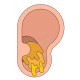

Ear wax
Rx
1.Otic drop Glycerin pheniqe N=1 q8h 3 drop for 1w
نکته 1 : قطره فوق سبب نرم شدن جرم داخل گوش میشود
نکته 2 : بعد از مصرف قطره فوق مراجعه به متخصص گوش جهت ساکشن کردن
✳️ احساس پری و فولنس در گوش
✳️ درد گوش
✳️ کاهش شنوایی
✳️ وزوز گوش
✳️ خارش
✳️ ترشح گوش
✳️ سرگیجه
1️⃣ جسم خارجی
2️⃣ پرفوراسیون پرده تیمپان
3️⃣ اوتیت اکسترن
4️⃣ کلستئاتوم
5️⃣ هماتوم
6️⃣ تومور
7️⃣ فولیکولیت یا فرونکلوز کانل گوش
8️⃣ درماتیت
9️⃣ خراشیدگی کانال گوش